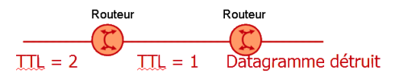

Durée de vie (TTL)
Imaginons que nous envoyons un paquet sur Internet et que ce paquet ne trouve jamais le destinataire. Alors ce paquet va tourner indéfiniment sur Internet et encombrer le réseau. Afin d'éviter ce problème, le champ TTL a été créé dans l'entête IP.
Le champ TTL (Time To Live = durée de vie), codé sur 8 bits, indique le nombre maximal de routeurs que peut traverser le datagramme.
À chaque traversée d'un routeur, ce champ est décrémenté de 1. Lorsqu'un routeur reçoit d'un datagramme dont la durée de vie est nulle, il le détruit. Cela évite que des trames circulent indéfiniment sur Internet.
En cas de destruction, le routeur envoie à l'expéditeur un message ICMP indiquant l'erreur.
Exemple :
